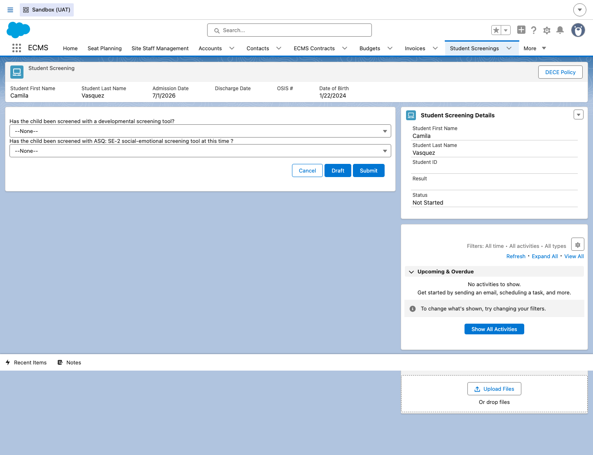
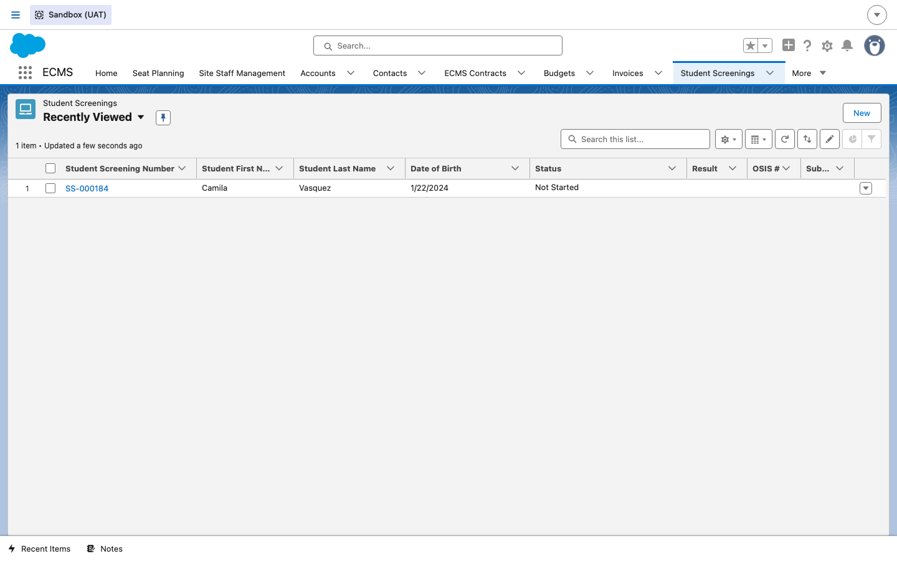
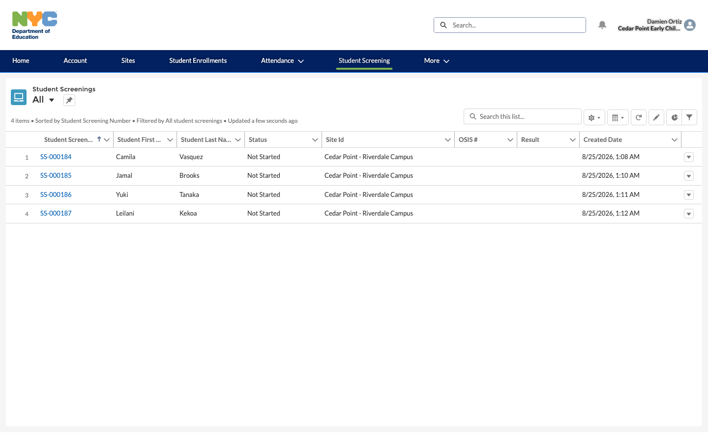
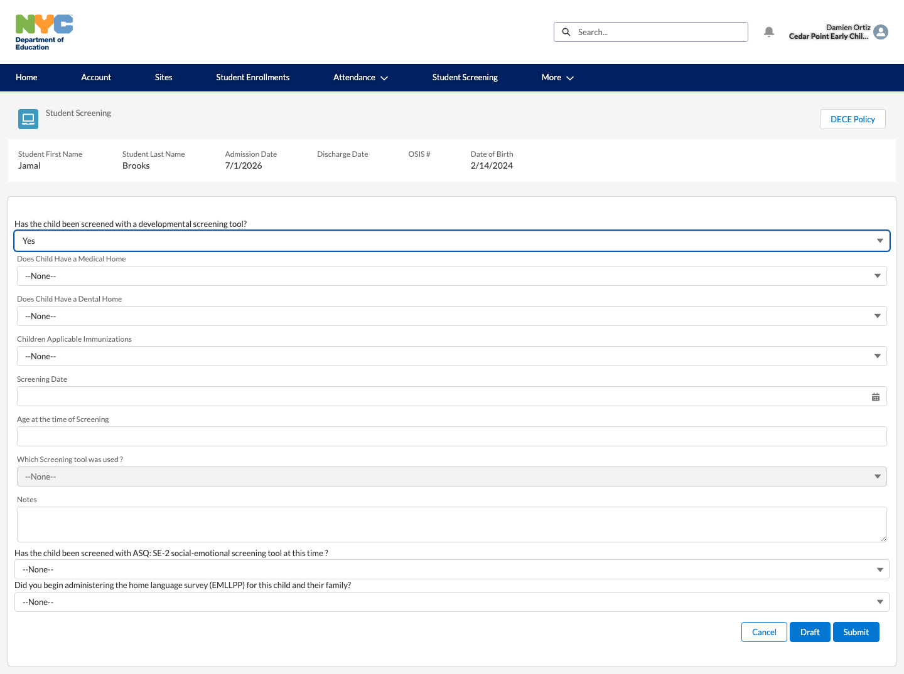
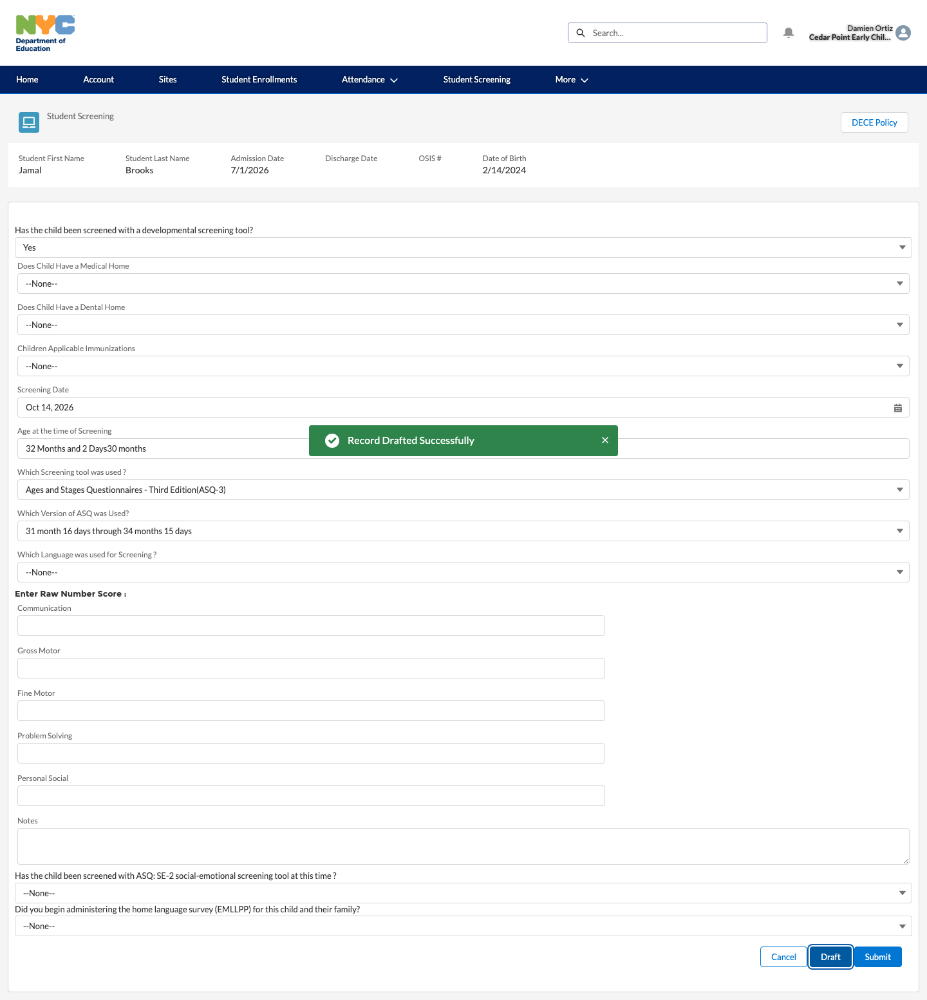

Student Screening
How ECMS tracks a child's developmental screening — the record that's created automatically with every regular enrollment, how DOE staff check its status, and how a CBO vendor enters the actual screening results.
Overview
Every child enrolled in ECMS needs a developmental screening — a check (using a tool like ASQ-3, Brigance, or ESI-3) that flags whether the child may need additional support. ECMS tracks this as its own Student Screening record, related to both the child's Contact record and their Enrollment. This guide covers the internal (DOE) view of screening status and the CBO vendor's workflow for entering results — it does not cover FCCN specifically, since the live examples found for this guide were CBO-side.
1A screening record is created automatically with the enrollment
DO Open any actively enrolled student's Contact record and look at the Student Screenings related list.
RESULT A Student Screening record already exists, defaulted to Status = Not Started — it's created automatically alongside a regular enrollment, not something staff have to remember to add themselves.
2Internal: view a student's screening status
DO As an Enrollment Specialist, open the Student Screenings tab, or a specific screening record directly (e.g. from a student's Contact).
RESULT The record detail page shows the student's name, admission date, OSIS #, and date of birth up top, a Status field (Not Started, Drafted, Submitted, Rescreen, or Completed), and the same developmental-screening questions the vendor will eventually fill in — all currently blank for a Not Started record.

DO Open the Student Screenings list view instead of a single record.
RESULT A list loads with Student First Name, Student Last Name, Date of Birth, Status, Result, and OSIS # columns — letting staff scan many students' screening status at once instead of opening each record.

3Vendor: review every screening for your site
DO From the vendor portal, click the Student Screening tab in the top navigation.
RESULT A list loads, scoped to the vendor's own site, showing every enrolled child's screening with the same Status/Result columns seen internally — this is the vendor-side equivalent of Step 2's internal list, letting a CBO see at a glance which of its own students still need a screening done.

4Vendor: enter screening results
DO Click into one student's screening (e.g. Jamal Brooks', SS-000185) and answer “Has the child been screened with a developmental screening tool?”
RESULT Selecting Yes dynamically expands the form to reveal the full set of fields needed to record the result: Medical/Dental Home, Immunizations, Screening Date, Age at the time of Screening, Which Screening Tool was used, Notes, and (once a tool is picked) a tool-specific follow-up like Which Version of ASQ was Used, auto-suggested from the age entered.

DO Fill in the Screening Date, Age, and Screening Tool, then click Draft (or Submit once complete).
RESULT ECMS shows a “Record Drafted Successfully” confirmation, and the record's Status updates from Not Started to Drafted — confirmed live by re-querying the record after saving.

32 Months and 2 Days) as soon as a Screening Date is entered,
but if a value is also typed into the field, ECMS concatenates both instead of replacing one
with the other (observed result: 32 Months and 2 Days30 months). Leave this field to
auto-calculate rather than typing into it directly.
5Rescreening and notifications
Two Phase 1 topics for this module — Rescreen Students and Receive Notifications on Needed Screenings — are grounded here in the live object's configuration rather than an independently re-walked live example:
- Rescreening: the Status picklist includes a dedicated Rescreen value (distinct from Submitted/Completed), and the object has its own Rescreening after date field — results close to a tool's cutoff (e.g. a Result of “ASQ - Close to Cutoff” or “Brigance - Close to Cutoff”) are the ones meant to drive a rescreen.
- Notifications: the object has a Sent notification checkbox field, confirming reminders are system-driven rather than manual — consistent with other ECMS modules' automated reminder pattern (e.g. the monthly certification reminder in the Attendance guide). As with those, an actual reminder email couldn't be triggered or observed live in this session — confirm timing/content with the test lead if that specifically needs sign-off.
6Screening dashboards and deadlines
DO See the Reporting & Dashboards guide for the DOE-internal dashboards built on this data.
RESULT Four screening-specific dashboards already exist — Past Due Screenings, and Screening Deadline within 5/15/30 Days — all visible to the ECMS Internal Admin and Enrollment Specialist personas, giving DOE staff a proactive view of which students are approaching or past their screening deadline rather than only finding out reactively.